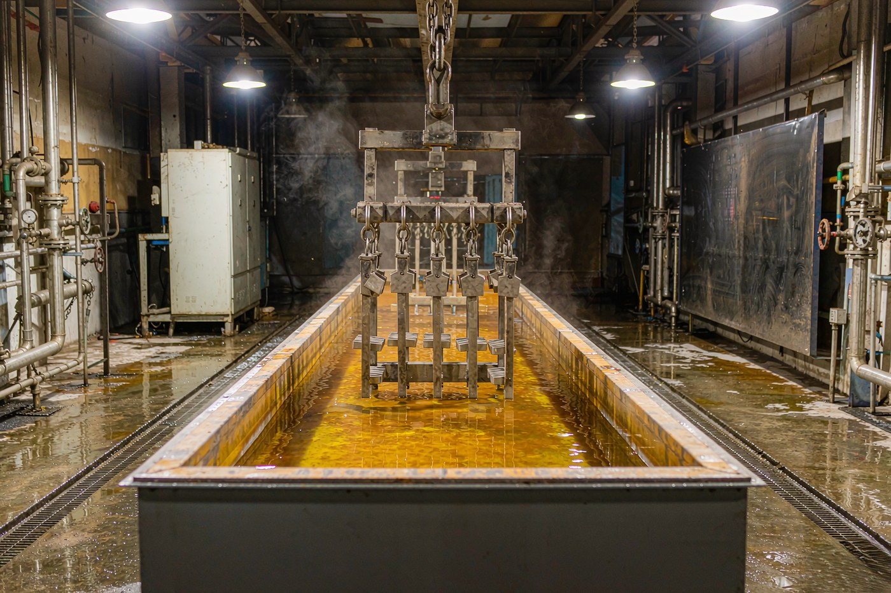
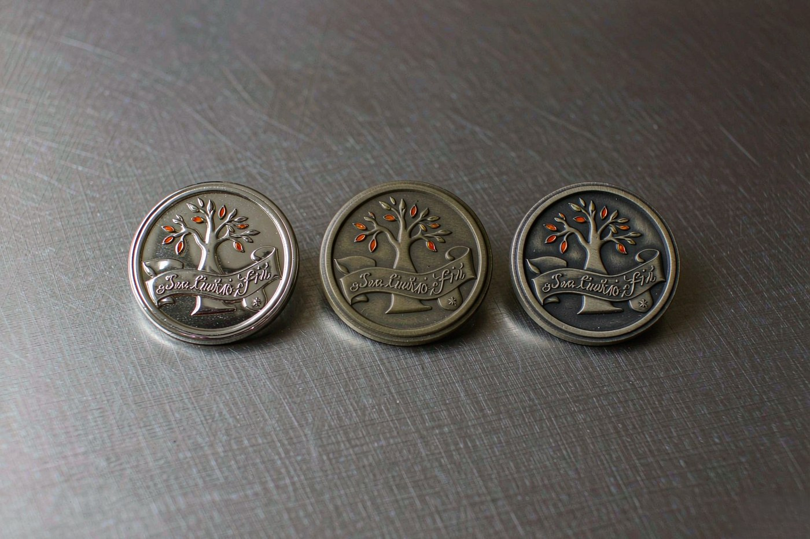
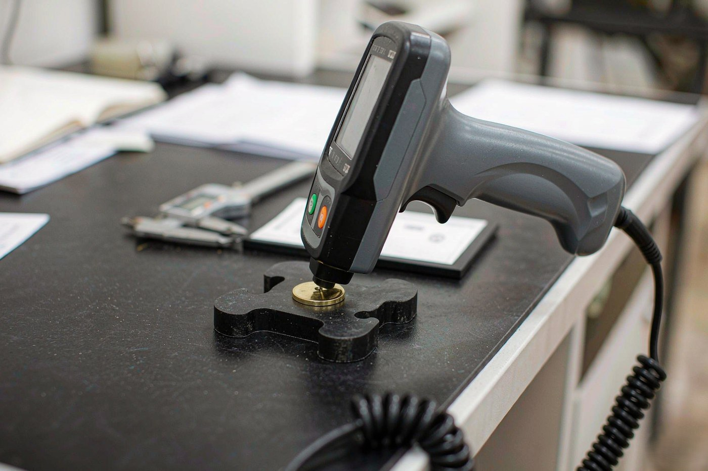

Two pins made from the same artwork, the same size and the same metal can look like they came from different factories. One is mirror bright and catches every light in the room. The other is flat, quiet, almost soft to look at. Same brass, same mould, same press. The only difference is what happened in the plating bath and afterwards.
That is the part buyers tend to under-specify. They name a colour from a photograph, get a quotation against it, and then receive something that is technically the right finish and practically not the piece they imagined. The twelve finishes we run are not twelve colours. They are three families of surface behaviour, and once you can tell them apart you can choose deliberately rather than by guesswork.
This is what each finish actually does, why a plating colour is not the same thing as a Pantone colour, and what happens to a design that is too fine for a thin plated layer.

Three families, twelve names
This is the single most useful thing to understand about plating. The twelve options on the plating finishes page are not twelve separate alloys. Underneath, the base metal is the same across the range. What changes is how the surface is treated after the metal is deposited.
| Family | What it does | Finishes in this family |
|---|---|---|
| Bright | Reflects. The surface stays smooth and mirror-like, so the pin reads as polished metal. | Shiny 24K gold, silver |
| Matte | Diffuses. The glare is taken off the whole surface, so the piece reads flat and even under any light. | Matte 24K gold, matte black nickel, matte ruthenium |
| Antique and brushed | Darkens the recess and leaves the high points bright. The design itself carries the contrast. | Antique gold, antique brass, antique silver, brushed silver |
The remaining finishes, rose gold, copper and black nickel, sit across these families in the way you would expect. Rose gold and copper are warm tones applied across the whole piece. Black nickel is a dark tone that is still reflective, which is exactly what separates it from matte black nickel.
Here is the practical consequence, and it is the one that matters when you are choosing. A bright finish shows every fingerprint, every scratch and every unevenness in the plating. A matte finish hides small imperfections and flatters a piece with a simple design. An antique or brushed finish does something neither of the others can: it gives a flat two-dimensional design depth, because the recess darkens while the raised lines stay bright.

Why antique and brushed work the way they do
This is worth understanding properly, because it is where the best-looking pins come from and where the most expensive mistakes get made.
An antique finish is not a colour. It is a process applied to the geometry that already exists in the metal. The recess of the design is darkened, and the raised high points are left bright. The result is that the design reads in relief even when the artwork is flat.
That means the effect depends entirely on the artwork having relief to work with. A flat filled design with nothing raised above the surface will show you a uniformly darkened plate. Antique finishes need a design with lines and edges, and they need those lines to be deep enough to hold a contrast.
On a die struck piece the same effect comes from a different route: the relief is physically raised by the press, then polished on the high points while the recessed background is sandblasted or antiqued. The five-process comparison sets out how each process holds relief, and the artwork guide covers why a hairline is the first thing to disappear under plating.
A brushed finish works across the relief rather than in the recess, giving a directional satin texture. It is quieter than a bright finish and more even than an antique one, and it is a common choice for technical and industrial pieces where the surface should read as engineered rather than decorative.
Why 0.2 to 0.5 microns is unforgiving
On hard enamel the plating runs 0.2 to 0.5 microns over a copper strike. Read that again, because it is thinner than you may have assumed. It is not a coating you can feel. It is a layer measured in fractions of a micron.
A thin layer has consequences for your artwork, and they are worth planning around.
- Fine lines fill in. A hairline that survives the press can close up under a slightly heavy plating, which is why we aim for 0.5 mm and above on critical outlines.
- Colour sits on top of metal, not instead of it. The plating is the metal you see between and around the enamel.
- Consistency is a manufacturing problem, not a design problem. Every rack sits in the bath for its own length of time, so rack-to-rack matching is what we measure.
Die cast pins take the full plating range, including the antique and matte finishes, because the cast surface is thicker and more forgiving. Die struck metal can be polished, brushed, sandblasted, antiqued or matte, with the contrast between the polished relief and the recessed background doing the work.
A plating colour is not a Pantone colour
This is the misunderstanding that produces the most expensive surprise in a pin order. Plating and enamel colour are specified separately, and a Pantone reference does not set a plating colour.
Enamel colour is a liquid pigment matched against a Pantone reference on a calibrated line. Hard enamel typically carries up to four Pantone references because the enamel is lapped back to a thin film; soft enamel typically carries up to six, because the fill is never ground down. We hold that standard for the whole run, with 24 dispensing robots filling the cavity the same way every time and 18 hand-colouring specialists handling the recesses a needle probe cannot reach.
Plating colour is the colour of the metal itself, and it is judged against a physical reference, not a number. A gold that reads correctly under showroom lighting can look greenish in daylight and orange under a warm bulb. The hard and soft enamel comparison makes the same point from the other side: a shiny gold pin and a brass pin can carry exactly the same enamel colour, because plating is the metal finish and enamel is the fill.
That is why we always ask for a physical sample before a run. Colours not held to a Pantone standard are matched to the sample you approve, and a flat render cannot show you how a finish catches light. The samples page covers the four kinds of sample and what each one settles.
Which finish for which programme
The honest answer is that the right finish depends on the design and the occasion, not on a rule. But there are patterns, and they are consistent enough to be worth stating.
| If the programme is | Start with | Because |
|---|---|---|
| A modern corporate or conference piece | Matte 24K gold or matte black nickel | Even under any light, and it forgives a little unevenness that a bright finish would expose. |
| A heritage, military or club badge | Antique gold, antique brass or antique silver | Darkened recesses with bright high points is how this work is meant to read, and it gives a flat design depth. |
| A competition or achievement coin | Shiny 24K gold or silver | The weight and the reflectivity together are what make it feel like an object rather than a token. |
| Technical, industrial or outdoor equipment | Brushed silver | A satin texture reads as engineered, and it hides handling marks better than a mirror. |
| Something with a warm, non-standard tone | Rose gold or copper | Both run across the whole piece rather than only in the recess, so they need a design that reads at a distance. |
Two practical warnings. First, an antique finish needs relief, so if your artwork is a flat filled design with nothing raised, choose matte or bright instead of asking for antique and hoping. Second, black nickel and matte black nickel are different finishes that people routinely confuse; black nickel is still reflective, which is why it is usually described as brighter than matte black.
How to check a finish before you commit
You do not need a supplier for this. You need a sample and a window.
Look at it in daylight, not under shop lighting. Plating that looks even under a warehouse fluorescent tube can show unevenness in daylight. This is the single most common way a finish is accepted at the sample stage and then disputed on arrival.
Turn it. A bright finish is only convincing when it catches a moving light source. Rotate the piece under a raking light and look at the recess and the high points separately. If the recess is not doing what you wanted, the finish is not doing it either.
Check the fine lines against the light. If a hairline has closed up under plating, it will show as a soft, blurred edge rather than a crisp one. Compare it against your artwork at the same size.
Ask for the finish kit if the finish is open. A sample kit carries the same design across all twelve plating options. It is the cheapest way to settle the question, and the FAQ covers how the sample cost is credited against your order.
And keep the sample. When the batch arrives, the sample is the only reference you have for what you approved. The inspection guide sets out what happens on the way from the last bench to the sealed carton.
What to send, and what happens next
Send the artwork, the quantity, and the finish you are considering. If you are undecided between two or three, say so and ask for the sample kit. You get a 2D and 3D CAD proof with an itemised quotation within 12 hours, and no tooling is charged until you approve the proof.
The plating line is in-house and licensed, and every rack is XRF tested before it leaves the workshop, so lead and cadmium content is verified by measurement rather than by paperwork. For EN71-3 and CPSIA we test the actual production batch on request. The factory page covers what that means for the rest of the production route.

From there the sequence is fixed: CAD proof, quotation, sample, production, inspection, packing. The bulk order guide sets out each stage and what it costs in time.
Plating questions answered
Twelve: shiny 24K gold, matte 24K gold, antique gold, silver, brushed silver, black nickel, matte black nickel, rose gold, copper, antique brass, antique silver and matte ruthenium. The same twelve are available across the enamel, cast and struck processes.
They are surface treatments on the same base metal. Matte takes the glare off a uniform surface, so the whole piece reads flat and even. Antique darkens the recessed areas and leaves the high points bright, so the design itself carries the contrast. Matte suits a modern corporate piece; antique is how heritage and military work is meant to read.
Not in the way you would on enamel. Plating colour is the colour of the metal itself, and it is judged against a physical reference rather than a Pantone number, because a gold that reads correctly under showroom lighting can look greenish in daylight. Enamel colour is the part matched to Pantone, on a calibrated line, held for the whole run. Colours not held to a Pantone standard are matched to the sample you approve, which is why we ask for a physical sample first.
Every rack is XRF tested, so the finish we quote is the finish that ships. XRF spectrometry runs on every plated batch before it leaves the workshop, which means lead and cadmium content is verified by measurement rather than by paperwork. For EN71-3 and CPSIA we test the actual production batch on request.
A line that survives the press can still close up under plating, because the plating runs 0.2 to 0.5 microns over a copper strike on hard enamel. We aim for 0.5 mm and above on logos and wordmarks, and the artwork guide sets out the minimum line width and how to check your own file against it.
Yes, and we would rather you did. A physical sample is the fastest way to settle plating, colour and clutch, because a flat render does not show how a finish catches light. A finish sample kit carries the same design across all twelve plating options, and the sample cost is credited against the production order.
The same twelve finishes are available across the enamel, cast and struck processes, but each process reaches them differently. Die cast pins take the full plating range including antique and matte. Die struck metal can be polished, brushed, sandblasted, antiqued or matte, with the contrast between the polished relief and the recessed background doing the work. An antique finish needs relief to work with, so it suits a design with raised lines more than a flat filled one.